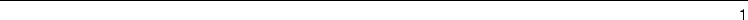

| Documenting Python |
| Documenting Python |
Discussion of the future of the Python documentation and related topics takes place in the Documentation Special Interest Group, or ``Doc-SIG.'' Information on the group, including mailing list archives and subscription information, is available at http://www.python.org/sigs/doc-sig/. The SIG is open to all interested parties.
Comments and bug reports on the standard documents should be sent to docs@python.org. This may include comments about formatting, content, grammatical and spelling errors, or this document. You can also send comments on this document directly to the author at fdrake@acm.org.

| Documenting Python |